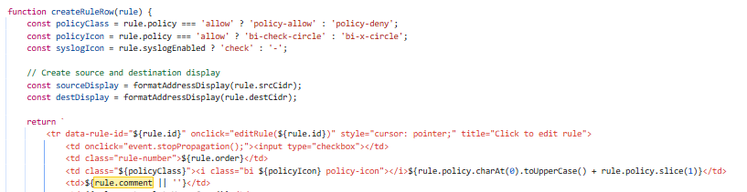

Penetration Test Report: Network Management System application — Stored/Reflected XSS (cross-site scripting)
Preface
This report documents a Manual Web Application pentest conducted with explicit permission from the system owner. The target/scope of the assessment was a network management system application developed using ClaudeAI. The findings underscore the risks of deploying AI-assisted or auto-generated systems without formal security review, as such tools may introduce exploitable flaws if left unchecked.
Disclaimer: This test was performed on a development system solely for educational and learning purposes. No production data or infrastructure was affected. This report should not be misinterpreted as an indication of vulnerabilities in any live or commercial system. All sensitive details have been removed or altered. No real-world system or data is disclosed.
As a security researcher without full-time development experience, and considering the application's AI-assisted development nature, although the testing and reporting was done manually, the "remediation recommendations" section in this report was researched and formulated with the assistance of AI to ensure technically accurate information.
System Profile
The system utilizing both JavaScript on the frontend and Flask/Python on the backend; integrates with multiple network infrastructure, and cloud-based network APIs. It aggregates this data into dashboards designed for Network Operations Centers (NOC) visibilty.
Application Flow
[ User Browser ]
|
| (1) jQuery AJAX Request
v
[ Frontend JavaScript ]
|
| → /api/get-firewall-rules
v
[ Flask Route (Python) ]
|
| (2) Secure API Call to External System
v
[ External API (cloud-based network firewall) ]
|
| (3) Response with rule data
v
[ Flask Backend ]
|
| (4) JSON response to frontend
v
[ Frontend Renders Dashboard ]Affected Path & Endpoint
- Path:
/firewall - Api-Endpoint:
/api/firewall/template/{template}/update
Vulnerability Type
- Stored (Persistent) XSS
- Reflected XSS
- HTML Injection
The application accepts and stores unsanitized user input in the comment field of the cloud-based network firewall rule editor. The payload is both:
- Reflected immediately in the HTTP response (Reflected XSS)
- Persisted and displayed to future users (Stored XSS)
Additionally, basic HTML tags such as <a> are
rendered unsanitized, enabling phishing attacks through malicious
links.
Enumeration
Initial Approach: Began with standard reconnaissance using nmap. Given the web application scope, transitioned to web-focused tools. Nikto scan was attempted but provided limited useful information about the application architecture.
| Technologies Identified |
|---|
| Frontend: JavaScript (jQuery identified in source code) |
| Backend: Flask (Python) - identified via wappalyzer andserver headers |
| APIs Consumed: cloud-based network firewall API |
Note: Potentially outdated jQuery version detected. Further investigation of version-specific vulnerabilities pending.
| Tools Used |
|---|
| Burp Suite pro |
| Wappalyzer |
| Browser DevTools |
Browsing the system notice that the nms(network management system) homepage has multiple tiles that display information from different network systems. Using wappalyzer it was deduced that the system is running a few javascript libraries and flask web framework.
Focusing on the site paths that allowed any user input I landed on the cloud-based network firewall tile or the
/firewallpath of the system.
Proof of Concept
1. Reflected XSS
Discovery Process: Started with basic input validation testing using special characters. Upon noticing < and > characters were not escaped, proceeded with:
- Initial test:
<h1>test</h1>- confirmed HTML injection possibility - Final test:
<script>alert(1)</script>- vulnerability confirmed
Additional observation: The application implements partial payload filtering, but allows <script> tags through. Further research needed on filter bypass techniques.

2. Stored XSS (Persistent)
- The same payload, once saved, is displayed to all users when they view the comment.
- Increases risk by automatically impacting any user who views the malicious entry.
3. HTML Injection for External Links
- Payload:
<a href="https://evil.com">Click me</a> - Behavior: This link gets rendered and becomes clickable, allowing redirection to phishing sites or attacker-controlled domains.
Payload Execution Sequence
An attacker submits a malicious payload to the comment field of the application. This payload is then stored in the backend database without proper sanitization. When the frontend retrieves and renders the comment, it does so using an unsafe template literal, injecting the raw content directly into the DOM whenever a rule is created or in this case; updated. As a result, any user who views the rule table in the interface will unknowingly trigger the execution of the attacker’s payload in their browser
Example of Vulnerable Code: 
function createRuleRow(rule) {
return `<td>${rule.comment || ''}</td>`; // 🚨 No sanitization
}JavaScript Sink Analysis:
The vulnerability stems from using element.innerHTML as a JavaScript sink point. This DOM property is particularly dangerous because:
- When element.innerHTML is set, the browser parses the new content as HTML, including any embedded
<script>tags or JavaScript events - Unlike textContent, innerHTML processes HTML entities and executes any JavaScript found in attributes like onclick, onmouseover, etc.
- The browser's HTML parser runs immediately when innerHTML is set, making it an active sink that can execute malicious code instantly
In this case, rule comments flow directly into element.innerHTML without sanitization, creating a critical XSS vector. An attacker can inject payloads like <img src=x onerror=alert(1)> that execute immediately when the comment is displayed.
Impact
- Credential theft via phishing links
- Session hijacking through JavaScript execution
- CSRF or forced actions using stored scripts
- Redirects to attacker-controlled domains
Recommendations & Remediation
Input Validation
- Validate all user-supplied input on the server side.
- Disallow any unexpected or special characters in fields that should not accept HTML or JavaScript.
- Enforce strong schema validation (e.g., using JSON schema or backend validators).
Output Encoding / Escaping
Best Practice: Avoid using element.innerHTML entirely. Instead, use safer alternatives:
- Use element.textContent for text-only content
- Use document.createElement() and appendChild() for DOM manipulation
- If HTML strings must be used, implement strict escaping:
function escapeHtml(text) {
return text
.replace(/&/g, "&")
.replace(/</g, "<")
.replace(/>/g, ">")
.replace(/"/g, """)
.replace(/'/g, "'");
}Safe Implementation:
// Instead of innerHTML, use:
function createRuleRow(rule) {
const td = document.createElement('td');
td.textContent = rule.comment || '';
return td;
}
// Or if escaping HTML is required:
function createRuleRowWithEscaping(rule) {
return `<td>${escapeHtml(rule.comment || '')}</td>`;
}Content Sanitization
If your application needs to allow limited HTML, do the following:
- Use a library like DOMPurify (client-side) or Bleach (Python) or OWASP Java HTML Sanitizer (Java).
- Strip or encode any script tags, inline event handlers (e.g.,
onclick), and untrusted attributes. - Whitelist only safe tags and attributes.
Recommended Allowed Tags: - <b>,
<i>, <u>,
<strong>, <em>,
<a href target rel>
Recommended Allowed Attributes: - href,
rel, target (for links) - Always add
rel="noopener noreferrer" to <a> tags
that open in a new tab.
Security Headers
Set the following HTTP headers globally:
Content-Security-Policy: default-src 'self'; script-src 'self'; object-src 'none'; base-uri 'none';
X-Content-Type-Options: nosniff
X-Frame-Options: DENY- Set cookies with
HttpOnly,Secure, andSameSite=Strict.
CVSS Score Estimate
| Metric | Value |
|---|---|
| Attack Vector | Network |
| Attack Complexity | Low |
| Privileges Required | Low |
| User Interaction | Required |
| Confidentiality Impact | High |
| Integrity Impact | High |
| Availability Impact | Low |
| Base Score (est.) | 8.2 - 9.0 |
Use the CVSS Calculator: https://www.first.org/cvss/calculator/
Conclusion
The application was found to reflect and persist unsanitized user input in HTML contexts, resulting in both reflected and stored XSS vulnerabilities. Importantly, the vulnerability did not originate from the backend cloud-based network firewall API itself, but rather from how the application rendered data received from the API without proper sanitization. Although the affected system was internal, it should still be treated as high-risk potential due to the possibility of chained attacks, lateral movement, and browser-based exploitation.
The vulnerabilities were responsibly reported and remediated through proper input sanitization, output encoding, and validation.